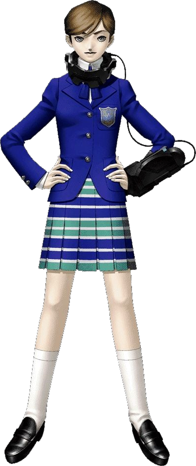
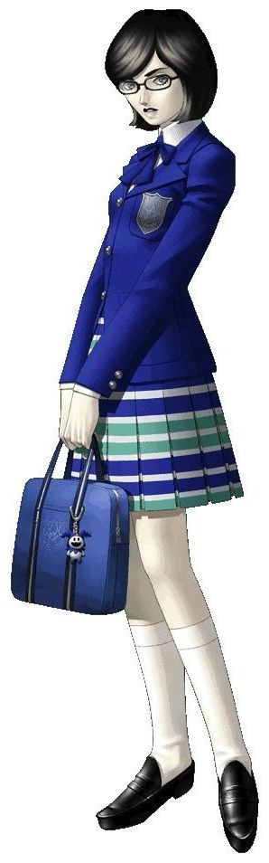
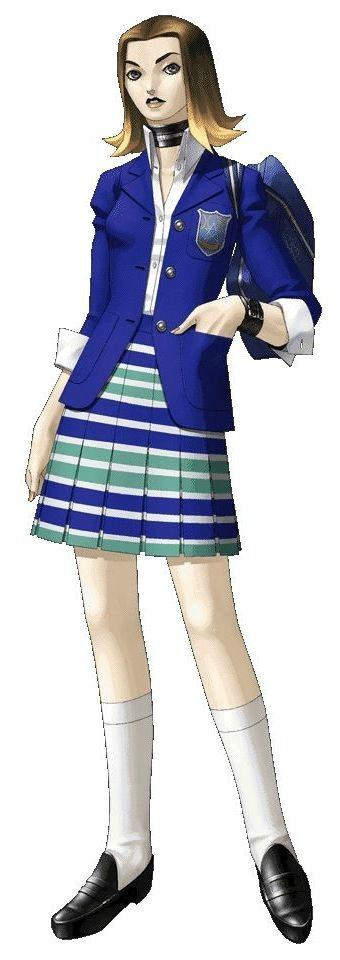
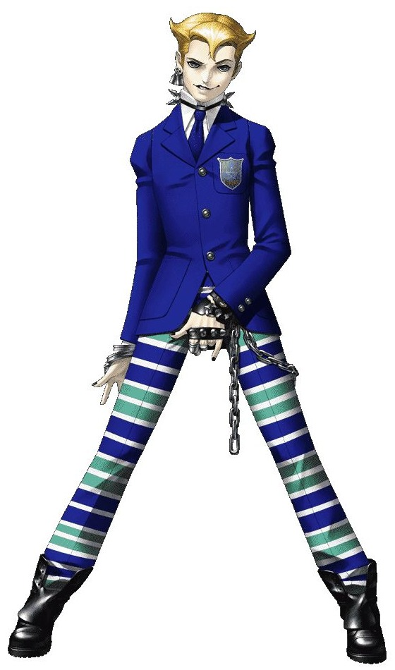
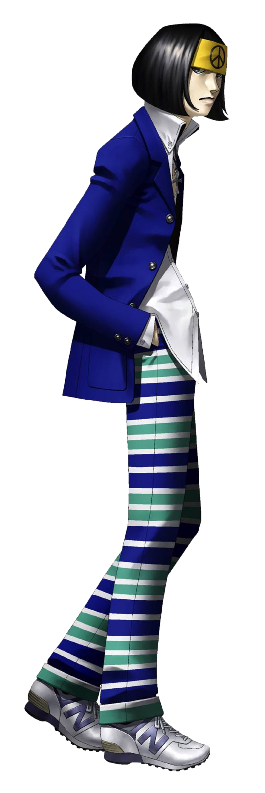
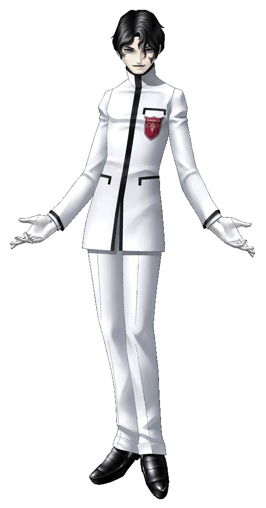

| Shin Megami Tensei: if... | |
|---|---|

|
|
| Nome original: | 真・女神転生if... |
| Ano de lançamento: | 1994 no Japão |
| Plataforma(s): | Nintendo 3DS |
Shin Megami Tensei: if...
Shin Megami Tensei: if... é um gaiden da série Shin Megami Tensei para o Super Famicom, lançado no Japão em 1994. Como o nome sugere, é um cenário "e se" onde os eventos de Shin Megami Tensei não aconteceram. Este jogo serviu de inspiração para a série Persona, estabelecendo as bases para o sistema de Personas e apresentando uma ambientação escolar.
| Contents |
|---|
1. Plot
Ideo Hazama, um estudante da Escola Secundária Karukozaka que sofre bullying de outros estudantes, realiza uma cerimônia ocultista no ginásio da escola para obter poder e se vingar. Como resultado, Hazama conseguiu se tornar o governante do makai sob o pseudônimo de Imperador Divino e transportar toda a escola para lá. O protagonista é uma aluna da escola que decide explorar o makai na esperança de voltar para casa.
No entanto, o makai está infestado de demônios perigosos e poderosos. Pouco antes de a escola ser enviada para o makai, uma cópia do Programa de Invocação de Demônios foi enviada para a rede de computadores da escola. Com a ajuda do presidente do clube de informática da escola, a protagonista instala o programa em um COMP customizado por um de seus professores. Com isso, a protagonista pode invocar e negociar com os demônios que habitam o makai.
No início do jogo, a protagonista deve escolher um(a) parceiro(a) para acompanhá-la em sua jornada de um grupo de quatro alunos: Yumi Shirakawa, Shinji "Charlie" Kuroi, Reiko Akanezawa ou Akira Miyamoto. Cada parceiro tem um caminho definido e, uma vez escolhido um, a protagonista fica bloqueada nesse caminho. As três primeiras opções visitam vários mundos baseados na maioria dos Sete Pecados Capitais enquanto a rota de Akira explora uma enorme torre conhecida como Torre do Confinamento.
2. Personagens





